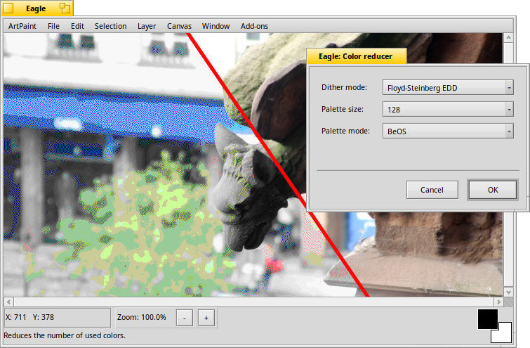

The Color Reducer add-on

There are different to reduce the number of colors:
, , , and .
It's best to try out what mode works best for your image, or the intended effect.
You can set the number of colors with the and choose a .
is quite slow, but returns nice results, while will use BeOS' system palette, which is probably not what you need…
Back: The Color Balance add-on Next: The Color Separator add-on